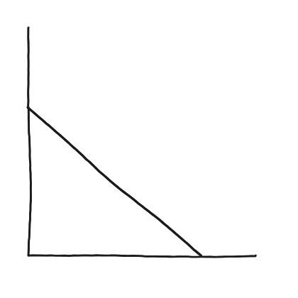
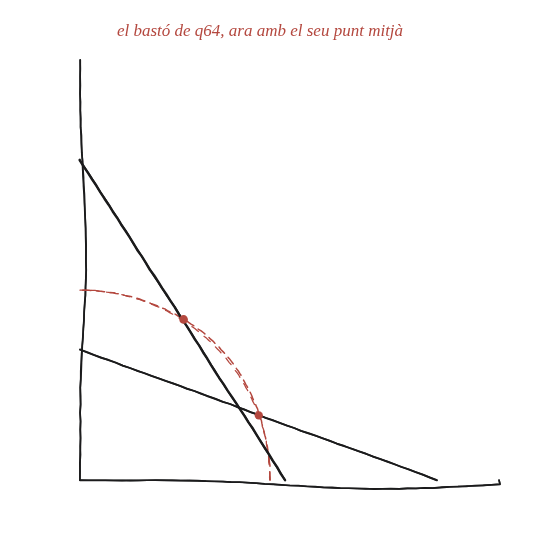

Una escala llisca per la paret fins que toca el terra. Quina corba descriu el seu punt mitjà?

Què hem de produir
La identificació exacta de la corba —no només una descripció aproximada com "es corba cap avall": quina figura geomètrica coneguda traça el punt mitjà del bastó mentre aquest llisca?
Cada instant és un triangle rectangle diferent
En qualsevol instant, el bastó, la paret i el terra formen un triangle rectangle: el bastó n'és la hipotenusa, l'angle recte és a la cantonada. Hi ha una propietat sobre la distància des del vèrtex de l'angle recte fins al punt mitjà de la hipotenusa, vàlida en qualsevol triangle rectangle.
La construcció

Tancar-ho
En un triangle rectangle, la distància del vèrtex de l'angle recte al punt mitjà de la hipotenusa és sempre la meitat de la hipotenusa —independentment de com s'obri o es tanqui l'angle. Com que la hipotenusa (el bastó) té sempre la mateixa longitud L, aquesta distància és sempre L/2: el punt mitjà es manté sempre a la mateixa distància L/2 de la cantonada, i per tant descriu un quart de cercle de radi L/2 centrat a la cantonada.
El punt mitjà d'un bastó de longitud L que llisca entre una paret i un terra descriu un quart de cercle de radi L/2, centrat a la cantonada —perquè el punt mitjà de la hipotenusa d'un triangle rectangle és sempre a distància L/2 del vèrtex de l'angle recte.
Comprovació
L=7 i el bastó formant un angle de 0,37 radians (uns 21°) amb el terra: el peu és a x=7·cos(0,37)≈6,53 i l'altre extrem a y=7·sin(0,37)≈2,53, de manera que el punt mitjà és (3,26; 1,27) i la seva distància a la cantonada, √(3,26²+1,27²)≈3,50 = 7/2. Amb qualsevol altre angle torna a sortir 3,5, i de fet no cal ni provar-ho: el punt mitjà és sempre (½·L·cos α, ½·L·sin α), i la seva distància a l'origen, ½·L·√(cos²α+sin²α) = L/2, sigui quin sigui α.
Aquest mateix bastó ja va donar, en una altra qüestió, l'envolupant de totes les seves posicions (un astroide). Aquí en surt un segon resultat, ben diferent: no la corba que "toquen" totes les posicions del bastó, sinó la corba que traça un únic punt (el mig) mentre el bastó es mou. Val la pena no confondre mai aquests dos conceptes: una envolupant és tangent a totes les còpies d'una família de corbes; una trajectòria és el camí d'un sol punt concret.